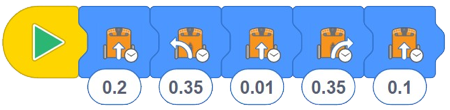

En esta actividad, los estudiantes escriben un programa de varios bloques utilizando diferentes bloques de accionamiento controlados por tiempo.
Esta actividad ayuda a los estudiantes a conectar lo que están haciendo en EdBlocks como verdadera
programación.
Los estudiantes deberán seleccionar los iconos y las duraciones correctos, probar el programa y luego ajustar
el programa para corregir los problemas.
• Recuerde a los estudiantes cómo descargar un programa y recordar escuchar el sonido de éxito antes de desconectar el cable EdComm.
• Hay varios bloques de 'unidad' diferentes en EdBlocks.
Para esta actividad, asegúrese de que los estudiantes estén seleccionando los bloques controlados por tiempo.
• Recuerde a los estudiantes que pueden cambiar la hora haciendo clic en el número y escribiendo el tiempo deseado, desde 0.01 hasta 320. El tiempo es en segundos.
• Si sus estudiantes tienen dificultades para conectar el cable EdComm a Edison, es posible que desee hacer
algunos EdCoasters.
Puede obtener el archivo de impresora 3D gratuito en este sitio
web.
1. Haga que los estudiantes creen y luego intercambien laberintos entre ellos, luego escriban y prueben los programas para resolver los laberintos.
2. Explore la programación como un trabajo, aprendiendo qué hacen los programadores y en qué industrias trabajan los programadores.
Tenga en cuenta: diferentes robots Edison viajarán a velocidades ligeramente diferentes, lo que puede hacer que los estudiantes obtengan resultados ligeramente diferentes. Las respuestas asumen que la hoja de actividades está impresa en papel A4.

- Este programa termina con el frente de Edison tocando la línea de meta.